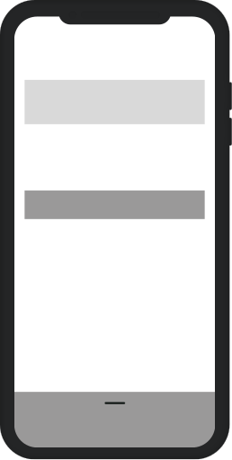
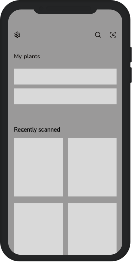
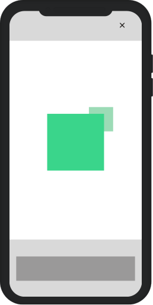
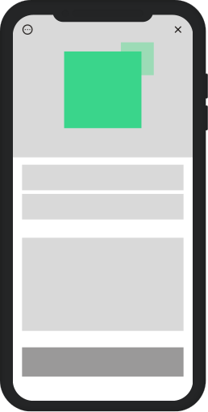
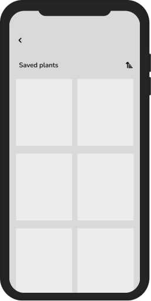
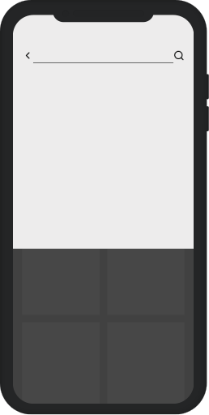
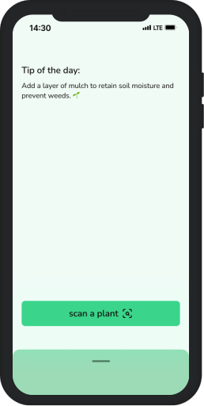
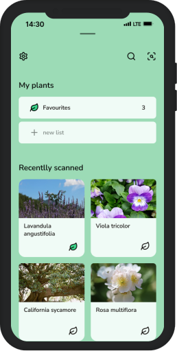
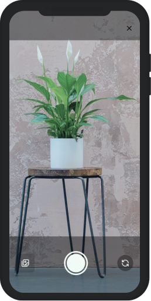
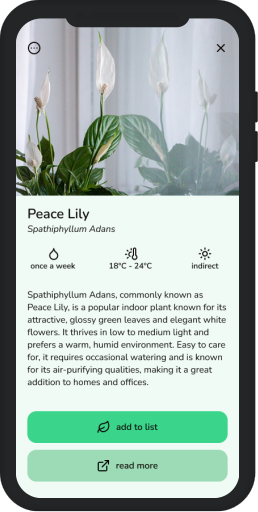

bonsai
ai powered plant identifier
Today many people struggle to identify species quickly and accurately. Existing apps are often cluttered with ads, complex interfaces, and unnecessary features. Users want a simple and user-friendly solution for plant identification that is easy to use.
While designing bonsai, the goal was to create a straightforward and intuitive plant identification experience.
To better understand user needs, I conducted a survey on plant identification apps while designing bonsai, informed by the feedback of 30 users aged 18-35:
How often do you struggle to identify plants?
Several times a week – 42%
Once a month – 38%
Rarely – 20%
What matters most in a plant ID app?
Accuracy – 70%
Speed – 21%
Design – 9%
Biggest frustration with existing apps?
Unnecessary features – 43%
Ads – 41%
Built-in purchases – 16%
Based on the gathered data, the personas presented here will help in understanding the target audience for the bonsai app.
Sue, 24
Copywriter
"I keep buying plants, but I never remember their names or how to take care of them. I just need an app that makes it easier."
Thomas, 32
Hiking enthusiast
"When I’m out hiking, I see so many interesting plants, but I have no idea what they are. I need a fast, easy way to identify them on the spot."
The main view of bonsai will consist of just a few elements. The top of the screen will feature the "tip of the day" section, where users will see random plant care tips. However, the scan button will play a key role on this screen. It will have a considerable size because according to Fitt's Law, the time required to reach a target depends on its size and distance. The button will also be placed at the center of the screen to ensure easy access for the user.
Additional features will be available through a sliding menu at the bottom of the screen, keeping the main interface clean and easy to navigate.


Let's focus on the main function of the bonsai app – scanning plants using the smartphone camera. After clicking the main button on the main screen, the app will open the camera (provided the user has granted permission in the settings).
The camera view will be designed to resemble the default camera apps on smartphones, ensuring that users can quickly understand the function of each button. The capture button will be centrally positioned for taking a photo. On either side, there will be buttons for switching between the front and rear camera and selecting an image from the gallery, which also requires user permission.

And this is where the computational magic begins. The backend artificial intelligence algorithms process the data provided by the user. Once the algorithm identifies and classifies the plant, the user is taken to a view displaying information about the scanned plant.
The plant information screen will feature its image at the top, occupying approximately 40% of the screen. This allows the user to easily verify whether the correct plant has been identified. Below the image, both the common and Latin names of the plant will be displayed. The majority of the screen will be dedicated to detailed plant information. Directly beneath the names, three quick care tips will be shown, helping the user understand how to properly care for the plant. The user will be able to see how much water, what temperature, and how much light the scanned plant requires.

If the user wants to learn more about the plant, a link to the online plant database will be available. At the bottom of the screen, there will be a button allowing the user to quickly add the plant to their favourites (or custom) list. This ensures that if the user owns the plant at home, they won’t have to scan it repeatedly.


Additional functionalities will include searching for a plant directly in the database by name and creating a new list. This layout should enable the creation of a simple yet clear and easy-to-navigate interface.
The foundation of the application has been successfully built, and now it's time to design the actual interfaces.
The app's logo was created using the Nunito font, due to its light and clean style. To maintain design consistency, the body text will use the Nunito Sans font. I decided to stick with just these two related fonts to avoid having too many, which could complicate the readability.
To emphasize the plant-related theme, the app will feature shades of green. This color palette combines freshness and elegance with a natural touch. The vibrant green (#3AD58B) adds energy, while the soft minty shade (#9CDBB6) brings a sense of calm. The light, almost white tone (#F0FBF6) creates a clean and airy feel, while the deep, nearly black hue (#0D0907) used for text adds contrast and sophistication.




Classification AI algorithms help users make decisions quickly and accurately. In my research with potential bonsai users, most preferred simplicity and efficiency over a large number of features. They wanted a straightforward experience that lets them identify plants easily without unnecessary complexity.
Bonsai's simple and accessible design ensures an intuitive experience, making it easy for users to identify unfamiliar plants. The interface is designed to be clear and efficient, guiding users smoothly through the process.
A monochromatic color scheme, a single font type, and a focus on core functionality create a clean and well-organized interface. This minimalist approach improves navigation and ensures that users can quickly get the information they need without distractions.